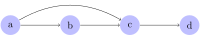
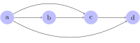
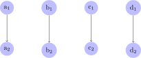
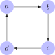
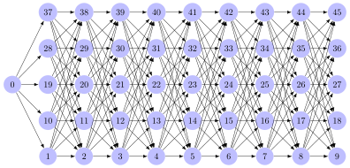

Strict order relations
There are numerous types of order relations. We will start out with strict orders as the definitions are slightly more intuitive in this case. After that, we will look at weak orders.
Strict partial orders and strict total orders
Strict orders can be partial or total. Their definitions are very succinct, but require specialized vocabulary.
A strict partial order is a binary relation \(R\) that is
- transitive: for all \(x, y, z\), \(x \mathrel{R} y\) and \(y \mathrel{R} z\) jointly imply \(x \mathrel{R} z\), and
- irreflexive: there is no \(x\) such that \(x \mathrel{R} x\), and
- asymmetric: for all \(x\) and \(y\), if \(x \mathrel{R} y\), then it is not the case that \(y \mathrel{R} x\).
A strict total order is a strict partial order that is semiconnex: for all \(x\) and \(y\), if \(x \neq y\) then it holds that \(x \mathrel{R} y\) or \(y \mathrel{R} x\).
These are very abstract definitions. In order to truly understand them, you have to develop an intuitive grasp of what each property means.
Transitivity
Suppose you have some set \(D\) of objects with a binary relation \(R\) defined over them. For example, we may have the set of natural numbers with the strictly less than relation \(<\), where we have \(3 < 5\) and \(4 < 5\), but not \(5 < 5\) (although \(5 \leq 5\)). We can think of these as structures where the set specifies the collection of building blocks and the relation connects these building blocks, putting them into a particular structural configuration. We can move through \(D\) along \(R\): if we are at \(x \in D\), we can move to any \(y\) such that \(x \mathrel{R} y\). And from \(y\), we can move on to any \(z\) such that \(y \mathrel{R} z\), and so on.
From the natural number \(5\), we can move to \(17\) via \(<\), and from there to \(329\).
This movement metaphor is very useful for understanding transitivity and other properties of relations. Some relations are such that whatever can be reached in two steps can also be reached in one step. So \(x \mathrel{R} y\) and \(y \mathrel{R} z\) entail that we also have \(x \mathrel{R} z\) — the ability to move from \(x\) to \(z\) via \(y\) implies that we can move directly from \(x\) to \(z\) without a stop at \(y\). Such relations are called transitive.
A binary relation \(R\) over \(D\) is transitive iff for all \(x,y,z \in D\) it holds that \(x \mathrel{R} y\) and \(y \mathrel{R} z\) jointly imply \(x \mathrel{R} z\). This must be the case even if \(x\), \(y\) and \(z\) are not distinct.
The human ancestor relation \(A\) is transitive. Your mother is one of your ancestors, and every ancestor of your mother is an ancestor of yourself. So \(x \mathrel{A} y\) and \(y \mathrel{A} z\) imply \(x \mathrel{A} z\).
What about the sibling relation \(S\)? Well, if John is a sibling of Mary and Mary is a sibling of Sue, then John is a sibling of Sue. So it looks like it is transitive. But it’s not! For a relation to be transitive, it is not enough that some cases obey transivitiy. All cases have to. So let’s look at this counterexample: John is a sibling of Mary, and Mary is a sibling of John, yet John is not his own sibling. In formal terms, we have \(\text{John} \mathrel{S} \text{Mary}\) and \(\text{Mary} \mathrel{S} \text{John}\), yet \(\text{John} \not\mathrel{S} \text{John}\).
Many other relations are not transitive, either. The human parent-of relation is not transitive, because there can be \(x\), \(y\), and \(z\) such that \(x\) is the parent of \(y\), \(y\) is the parent of \(z\), but \(x\) is not the parent of \(z\). In fact, that is how things are supposed to go in the real world and every deviation from this case is very problematic.
Sometimes a relation may partially meet the requirements of transitivity, but not for all elements of the domain. We have already seen this with the sibling relation, but let’s consider another case. You may love your parents, your parents love their parents, and you love your grandparents. So this is a case where we have \(x \mathrel{R} y\), \(y \mathrel{R} z\), and \(x \mathrel{R} z\). But obviously love is not a transitive relation — it is perfectly possible for a person you love to love somebody that you do not love at all. This shows that a relation is transitive only if there isn’t even a single counterexample to transitivity.
Intuitively, transitivity tells us that whatever can be reached in two steps can be reached in one step. But this actually implies that anything that can be reached in a finite number of steps can be reached in one step. This follows by iterated invocation of transitivity. Suppose that \(a \mathrel{R} b\), \(b \mathrel{R} c\), and \(c \mathrel{R} d\). This is shown pictorially below.

Then by transitivity, we also have \(a \mathrel{R} c\).

But then, again by transitivity, we must also have \(a \mathrel{R} d\) because of \(a \mathrel{R} c\) and \(c \mathrel{R} d\).

Since we can apply the same argument over and over again, anything that can be reached with a finite number of steps can also be reached in a single step.
It is also important to keep in mind that some relations can be trivially transitive, such as the relation below. Here there are no \(a\), \(b\), and \(c\) such that we have both \(a \mathrel{R} b\) and \(b \mathrel{R} c\), so transitivity holds because we cannot produce any counterexample to the claim that the relation is transitive.

Nor does transitivity imply that we can reach every element from every other element with a single step. Nodes may still be unreachable from certain positions. In the natural numbers, for example, \(<\) is transitive, yet it does not allow us to reach \(5\) from \(8\) (only the other way round).
Irreflexivity
Irreflexivity is much easier to understand than transitivity as it simply requires that no element be related to itself. In pictorial terms, an element is related to itself if there is a loop from the corresponding node back to itself. Only if there isn’t a single node with such a loop is the relation irreflexive.
Let \(R\) be a binary relation over \(D\). Then \(R\) is irreflexive iff there is no \(x \in D\) such that \(x \mathrel{R} x\).
The human parent-of relation is irreflexive because nobody can be their own parent. Similarly, \(<\) over natural numbers is irreflexive because no number can be strictly less than itself. However, \(\leq\) is not irreflexive because \(x \leq x\) for every number \(x\). Another relation that is not irreflexive is the relation induced by the identity function \(\mathrm{id}\), which maps every element to itself. This is shown below for the set \(\left \{ 1,2,3,4 \right \}\) with the identity relation:

Note that pictures can sometimes be misleading when it comes to irreflexivity. Consider the figure below.
It looks like this relation is irreflexive because no node has a loop back to itself. But it is common style for such figures to omit all connections that can be inferred via transitivity. So if this figure actually depicts a transitivity relation, then \(a \mathrel{R} b\) and \(b \mathrel{R} a\) implies \(a \mathrel{R} a\) because of transitivity. A clear violation of irreflexivity.
Asymmetry
A relation is asymmetric iff two elements can only be related in one direction, not both.
Let \(R\) be a binary relation over \(D\). Then \(R\) is asymmetric iff it holds for all \(x\) and \(y\) in \(D\) that \(x \mathrel{R} y\) implies \(y \not\mathrel{R} x\).
The human parent-of relation is asymmetric. If John is a parent of Mary, then Mary cannot be a parent of John — assuming that there are no time travel shenanigans.
The brother-of relation is not asymmetric. Yes, John may be a brother of Mary yet Mary isn’t a brother of John, which satisfies the asymmetry requirement. But we have to look at all relevant cases. There is at least one John out there who is a brother of a male human, who in turn would be the brother of John. Asymmetry is violated.
As with irreflexivity, some transitive relations may not be asymmetric even though they look like it.

It looks like the figure above contains no two nodes \(x\) and \(y\) such that \(x \mathrel{R} y\) and \(y \mathrel{R} x\) both hold. But once again the figure might just omit the parts of the relation that can be inferred from transitivity. If so, then \(b \mathrel{R} c\), \(c \mathrel{R} d\), and \(d \mathrel{R} a\) jointly imply \(b \mathrel{R} a\). But we already have \(a \mathrel{R} b\), so asymmetry is violated.
Semiconnexity
A relation is semiconnex iff all elements of the set are related to each other. Pictorially, there has to be some line between any two given nodes ( the lines that can be inferred via transitivity).
A binary relation \(R\) over set \(D\) is semiconnex iff \(x \mathrel{R} y\) or \(y \mathrel{R} x\) holds for all \(x, y \in D\) such that \(x \neq y\).
This unit contains several relations that are semiconnex. They are repeated below (but for the sake of readability, all edges are omitted that can be inferred from transitivity).
However, one of the displayed relations is not semiconnex.
That’s because \(a_1\) and \(b_1\) are distinct, yet neither \(a_1 \mathrel{R} b_1\) nor \(b_1 \mathrel{R} a_1\) hold.
The previous unit also showed a relation that’s not semiconnex.

Here none of the elements in the same “column” are related to each other, violating semiconnexity.
Indicate in the table below which properties hold of the respective relations.
Remarks:
- Assume suitable sets that the relations are defined over. For instance, the substring relation is defined over the set of all possible strings, and the subset relation should be defined over all possible sets.
- Lexicographic order refers to how words would be ordered in a dictionary, e.g. \(\text{aardvark} < \text{apple} < \text{be} < \text{bet} < \text{zoom}\).
- For some relations, you might want to justify why you think they (do not) satisfy a certain property.
| Properties | substring | \(\subsetneq\) | \(\subseteq\) | lexicographic order | taller than |
|---|---|---|---|---|---|
| transitive | |||||
| irreflexive | |||||
| asymmetric | |||||
| semi-connex | |||||
| strict partial order | |||||
| strict total order |
Give a real-world example of a strict partial order that is not a strict total order.